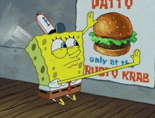

Meus Hobbies
Assistir Séries

Assistir séries é uma das coisas que eu mais amo fazer. É aquele momento em que eu desacelero, me desligo do mundo e entro em outras histórias, outras vidas. Cada episódio traz uma emoção diferente: curiosidade, alegria, suspense, às vezes até lágrimas. Para mim, séries não são só entretenimento — são companhia, inspiração e um jeitinho especial de tornar os dias mais leves.
Visitar Restaurantes Novos
Descobrir restaurantes novos é um dos meus hobbies favoritos. Eu amo sair por aí experimentando pratos diferentes, conhecendo lugares aconchegantes e me surpreendendo com sabores inesperados. Cada visita vira uma pequena aventura — às vezes é um achado incrível, outras vezes rende boas risadas, mas sempre vira lembrança. Para mim, comida é mais do que matar a fome: é experiência, é conexão e é um jeito delicioso de aproveitar a vida.
Escutar músicas

Às vezes, tudo o que eu preciso é colocar uma música e deixar o mundo desacelerar. Eu amo ouvir música porque ela me entende nos dias bons e me acolhe nos dias difíceis. Cada melodia carrega uma memória, cada letra parece conversar comigo. A música me acompanha enquanto eu sonho, crio, choro e sorrio. É nela que eu encontro silêncio quando tudo está barulhento, e companhia quando me sinto sozinha.